To respect client confidentiality, the visuals in this case study were re-created from scratch for portfolio purposes — the screens were rebuilt with an AI-assisted design system based on the publicly visible product. Specific data and internal details are anonymized. The core UX challenges, logic, and design processes remain authentic to my contribution. クライアントの機密保持に配慮し、このケーススタディのビジュアルはポートフォリオ用にゼロから再作成しています。公開されているプロダクトをもとに、AIを活用したデザインシステムで画面を再構築したものです。具体的なデータや内部情報は匿名化しています。UXの課題、ロジック、デザインプロセスの核心は、私の貢献に忠実なものです。
The Challenge 課題
Wireless plan pricing is inherently confusing. Customers adding multiple phone lines face compounding complexity: per-line costs shift based on plan tier, device selection, and discount combinations like AutoPay or BYOD. The existing purchase flow made it nearly impossible for customers to understand what they would actually pay each month — especially when configuring 2, 3, or 4 lines simultaneously. ワイヤレスプランの価格は本質的にわかりにくい。複数の電話回線を追加する顧客は、プランティア、デバイス選択、AutoPayやBYODなどの割引の組み合わせに応じて1回線あたりのコストが変動するという複雑さに直面する。既存の購入フローでは、特に2、3、4回線を同時に設定する場合、毎月実際にいくら支払うのかを理解することがほぼ不可能だった。
The cart was a black box. Customers couldn't see a per-line breakdown, couldn't understand how discounts were applied, and often abandoned the flow out of confusion rather than cost. The core problem wasn't the price itself — it was the lack of price transparency at the moment of decision. カートはブラックボックスだった。顧客は回線ごとの内訳を確認できず、割引がどう適用されているか理解できず、コストではなく混乱からフローを離脱することが多かった。核心的な問題は価格そのものではなく、意思決定の瞬間における価格の透明性の欠如だった。
My Approach アプローチ
Rather than designing static mockups in Figma, I live-coded functional HTML prototypes to explore the problem space. Complex interactive states — responsive cart panels that transform from side drawers to bottom sheets, multi-line plan configurations with real-time price updates, accordion behaviors with progressive disclosure — these are nearly impossible to communicate in static frames. Code was the design tool. Figmaで静的なモックアップをデザインするのではなく、問題空間を探索するために機能的なHTMLプロトタイプをライブコーディングした。サイドドロワーからボトムシートに変化するレスポンシブカートパネル、リアルタイム価格更新を伴うマルチライン設定、段階的開示のアコーディオン動作 — これらは静的なフレームでは伝えることがほぼ不可能。コードがデザインツールだった。
Through six prototypes, I systematically explored plan comparison layouts, cart panel architectures, and pricing display patterns. The breakthrough came with the "line item box" pattern — compact mini-cards within the cart that gave each phone line its own visual identity, showing plan, device, and cost at a glance. This pattern made multi-line pricing finally legible. 6つのプロトタイプを通じて、プラン比較レイアウト、カートパネルアーキテクチャ、価格表示パターンを体系的に探索した。突破口となったのは「ラインアイテムボックス」パターン — カート内のコンパクトなミニカードが各電話回線に独自の視覚的アイデンティティを与え、プラン、デバイス、コストを一目で表示する。このパターンにより、マルチライン価格がついに読みやすくなった。
Process プロセス
Rapid Prototyping in Code コードによるラピッドプロトタイピング
This came first — before any coded design system existed. Each prototype below is a fully functional HTML application I live-coded to test a different bet on the same pricing problem, so they deliberately look different from one another: this was divergent exploration, not a finished visual language. Toggle between desktop and mobile to see the responsive behaviors. Every one was shared directly with stakeholders and engineering as a living specification. これは最初の段階 — まだコード化されたデザインシステムが存在しない時期のものだ。以下の各プロトタイプは、同じ価格の課題に対する異なる賭けを試すためにライブコーディングした完全機能の HTML アプリケーションで、だからこそ、あえて互いに違う見た目になっている。完成したビジュアル言語ではなく、発散的な探索だ。デスクトップとモバイルを切り替えてレスポンシブ動作を確認してほしい。いずれも、生きた仕様書としてステークホルダーとエンジニアリングに直接共有した。
Additional Prototypes その他のプロトタイプ
Interaction Flow Maps — Figma Documentation インタラクションフローマップ — Figmaドキュメント
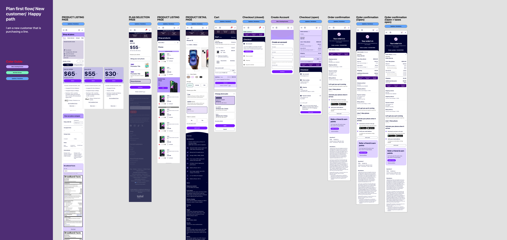
1-Line Purchase Flow: Plan selection → device → cart → checkout → confirmation 1回線購入フロー：プラン選択 → デバイス → カート → チェックアウト → 確認
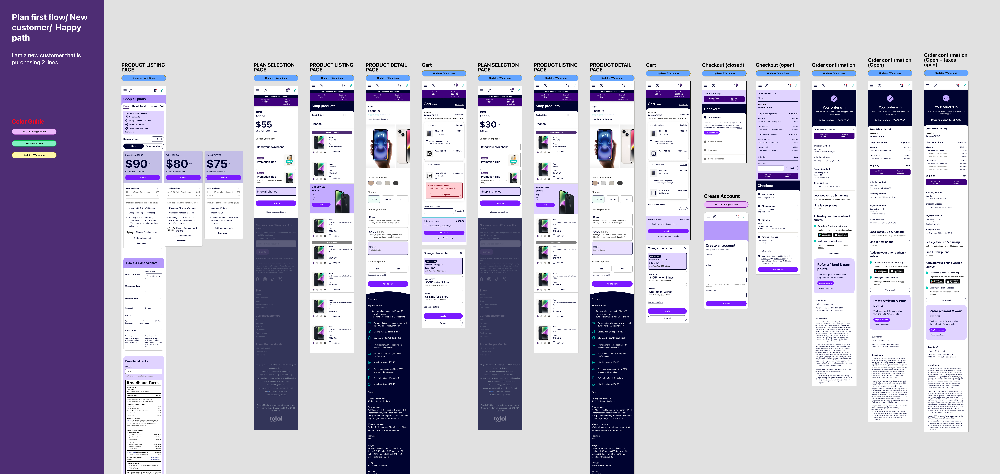
2-Line Purchase Flow: Shows how per-line pricing complexity scales with additional lines 2回線購入フロー：回線追加に伴う価格の複雑さのスケーリングを示す
The Brand, Reverse-Engineered into Code ブランドを、コードへリバースエンジニアリング
Total Wireless is one of several brands under one roof, so its design system was built in Figma as a tight, white-label architecture — a single set of nested components, re-skinned per brand. Powerful and rigorous, but locked inside Figma. It was never handed to designers as code, so as the AI era arrived there was no way to prototype with the real brand in running code. Total Wireless は、ひとつの傘の下にある複数ブランドのうちのひとつだ。だからそのデザインシステムは、Figma 上でタイトなホワイトレーベル型のアーキテクチャとして組まれていた — ネストされた単一のコンポーネント群を、ブランドごとにスキンだけ差し替える構造だ。強力で厳密、しかし Figma の中に閉じていた。それがデザイナーにコードとして渡されることはなく、AI 時代が訪れても、実際のブランドで動くコードのプロトタイプを作る術がなかった。
So I reverse-engineered it. Working from the publicly visible product, I rebuilt the brand as code: design tokens for color, type, radius, and spacing, wired into a typed shadcn/ui component registry on Next.js. Now an AI — or any engineer — can assemble a new screen and it comes out on-brand by construction: the right navy, teal, and red; the right radii, type, and spacing. そこで、リバースエンジニアリングした。公開されているプロダクトを手がかりに、ブランドをコードとして組み直した — 色・書体・角丸・余白のデザイントークンを、Next.js 上の型付き shadcn/ui コンポーネントレジストリに接続した。こうすれば、AI でも — あるいは誰が書いても — 新しい画面を組んだ瞬間に、構造としてブランド通りに仕上がる。正しいネイビー・ティール・レッド、正しい角丸・書体・余白。
The early live-coded prototypes proved the UX fast, but each was a one-off throwaway. This was the opposite: one reusable system, faithful to the brand and close enough to production to ship — the definitive version of the same idea, and the bridge between the brand and AI-coded prototypes. 初期のライブコードのプロトタイプは UX を素早く証明したが、いずれも一度きりの使い捨てだった。これはその正反対 — ブランドに忠実で、そのまま出荷に近い、単一の再利用可能なシステム。同じ発想の決定版であり、ブランドと「AI が書くプロトタイプ」をつなぐ橋だ。
@theme inline { /* Brand — from the Figma source of truth */ --font-heading: "Galano Grotesque", "Inter"; --color-tw-navy-900: #000330; /* primary text */ --color-tw-navy-500: #26358B; /* brand blue */ --color-tw-teal-400: #00C8B7; /* savings/promo */ --color-tw-red-600 : #EE0000; /* Add to Cart */ --color-tw-gray-100: #F2F2F2; /* page surface */ }
const buttonVariants = cva( "rounded-full font-bold transition-all", { variants: { variant: { default: "bg-tw-navy-900 text-white", // primary cta : "bg-tw-red-600 text-white", // Add to Cart teal : "bg-tw-teal-400 text-tw-navy-900", // savings }, } } )
Every brand value lives in code. Colors, type, and radii come from tokens extracted from Figma (left); each component maps a Figma variant onto those tokens (right) — so “Add to Cart” is always tw-red-600, never a guess. That constraint is exactly what lets an AI build a prototype that stays on-brand.
ブランドの値はすべてコードにある。色・書体・角丸は Figma から抽出したトークンに由来し（左）、各コンポーネントは Figma のバリアントをそのトークンへ対応づける（右）— だから「Add to Cart」は常に tw-red-600 で、推測が入り込まない。この制約こそが、AI にブランド通りのプロトタイプを組ませられる理由だ。
Rendered from the Registry — Plan Listing レジストリから描画 — プラン一覧
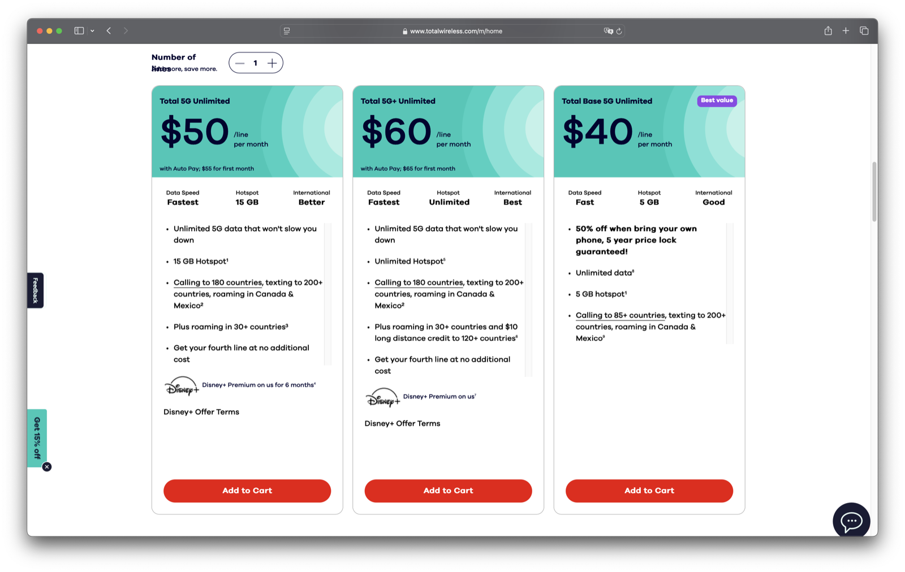
The live page — assembled entirely from registry components (PlanCard, SavingsBar, SegmentedControl, Badge), every value driven by the tokens above. 実際に動くページ — レジストリのコンポーネント（PlanCard、SavingsBar、SegmentedControl、Badge）だけで構成し、すべての値を上記トークンで駆動している。
Responsive Component & Figma Source レスポンシブコンポーネント＆Figmaソース
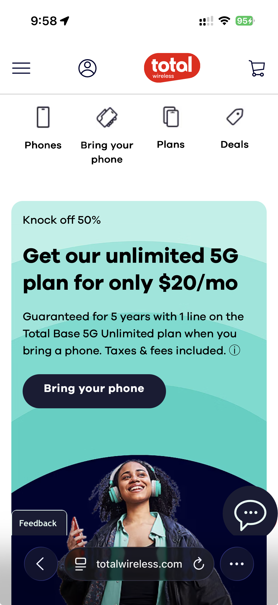
The same coded components reflow to mobile (left); each traces back to a token-driven Figma source of truth (right). 同じコード化コンポーネントがモバイルへリフローする（左）。それぞれがトークン駆動の Figma ソース（右）に対応している。
12 Production Components 12 のプロダクションコンポーネント
The Storybook — Live Component Catalog Storybook — 実際に動くコンポーネントカタログ
This is where the reverse-engineered system becomes something a team can actually use. The whole thing ships as a browsable styleguide, running live in the page: brand tokens, every component with its variants and states, and guides for pulling components from the registry and tracing each one back to its Figma origin. Open Brand, Components, or Guides and click around — this is the catalog a teammate, or an AI agent, pulls from to build on-brand, every time. リバースエンジニアリングしたシステムが、チームが実際に使えるものになる場所がここだ。システム全体は、ブラウズできるスタイルガイドとして、このページ上でそのまま動いている — ブランドトークン、各コンポーネントのバリアントと状態、レジストリからコンポーネントを取り込む方法、そして各コンポーネントを Figma の出自までたどるガイドまで。Brand・Components・Guides を開いて触ってみてほしい — チームメイトや AI エージェントが、毎回ブランド通りに作るために参照する、そのカタログそのものだ。
Shipped Product 出荷された製品
Team Output チームの成果The shopping flow shipped across desktop and mobile. My prototypes and the design-system patterns informed the cart architecture, the per-line pricing display, and the responsive behavior. Here is the journey end to end — each desktop screen beside its mobile counterpart. ショッピングフローはデスクトップとモバイルで出荷された。私のプロトタイプとデザインシステムのパターンが、カートアーキテクチャ・回線ごとの価格表示・レスポンシブ挙動に反映されている。以下は購入体験のエンドツーエンド — 各デスクトップ画面を、対応するモバイル画面と並べて示す。
01 — Home & Plan Selection01 — ホーム＆プラン選択
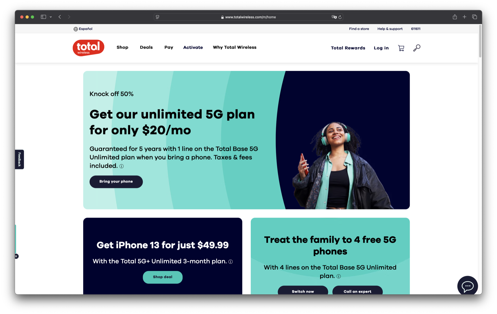

Home — plan promo and the entry points into the shopping flow.ホーム — プランのプロモと、購入フローへの入口。

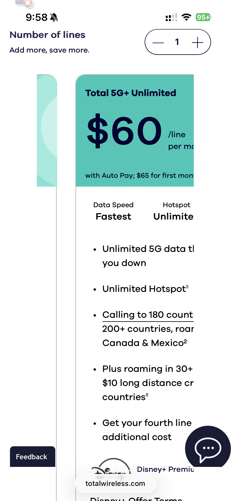
Plan selection — three unlimited tiers compared side by side, price-first.プラン選択 — 3 つのアンリミテッド・ティアを価格ファーストで並べて比較。
02 — Choose Your Phone & Plan02 — 端末とプランの選択
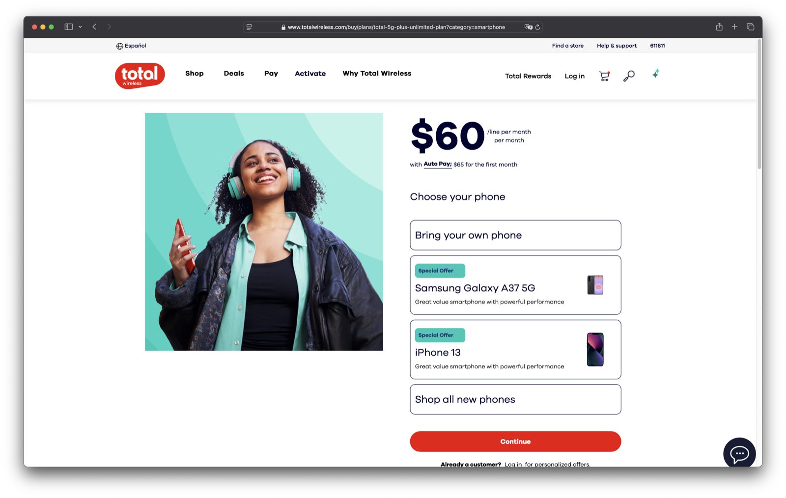
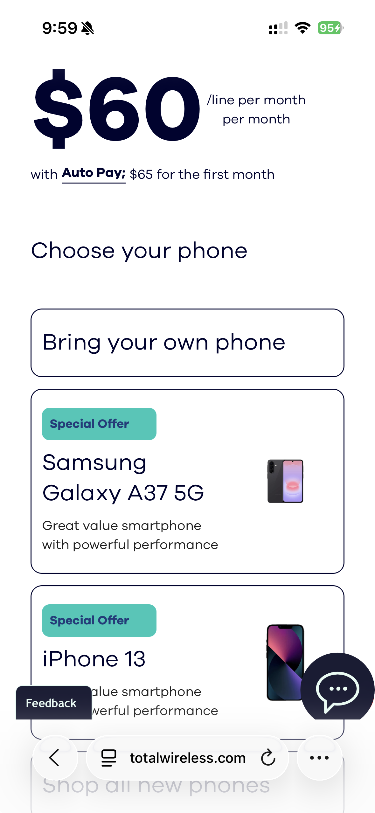
Plan detail — bring your own phone, or pick a device to pair with the plan.プラン詳細 — 手持ちの端末を使うか、プランに合わせて端末を選ぶ。
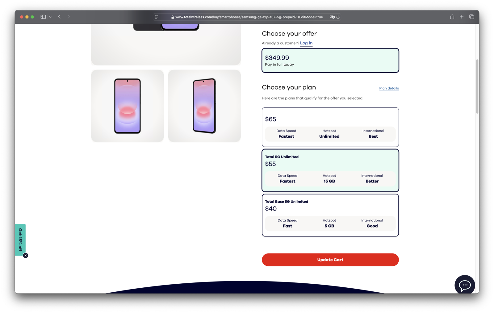
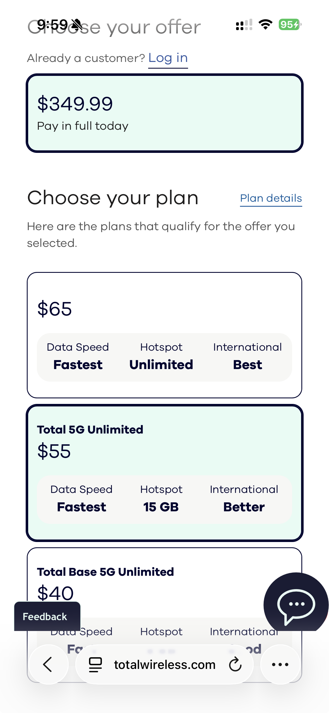
Device detail — choose the offer, then the matching plan, in one place.端末詳細 — オファーを選び、対応するプランまでを一画面で決める。
03 — Cart: Line-Item Pricing03 — カート：ラインアイテム価格
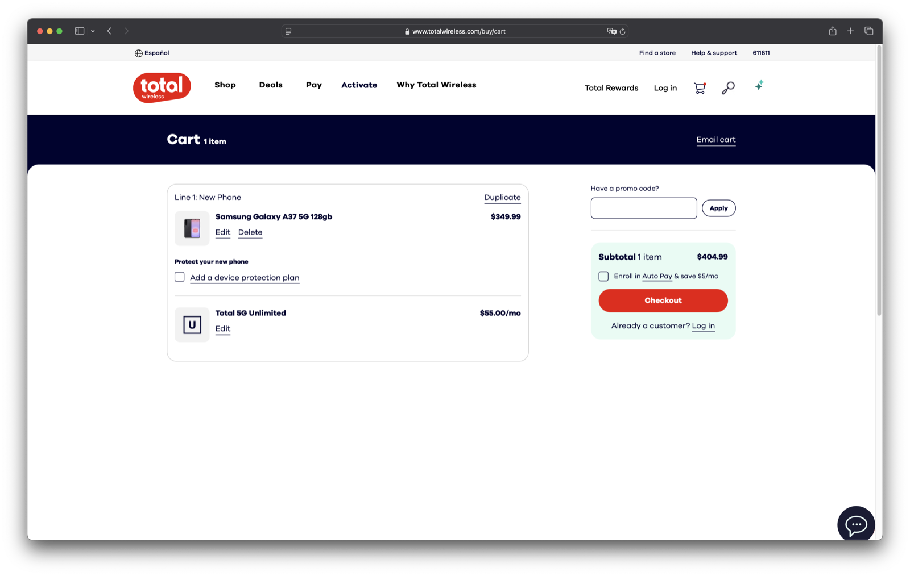
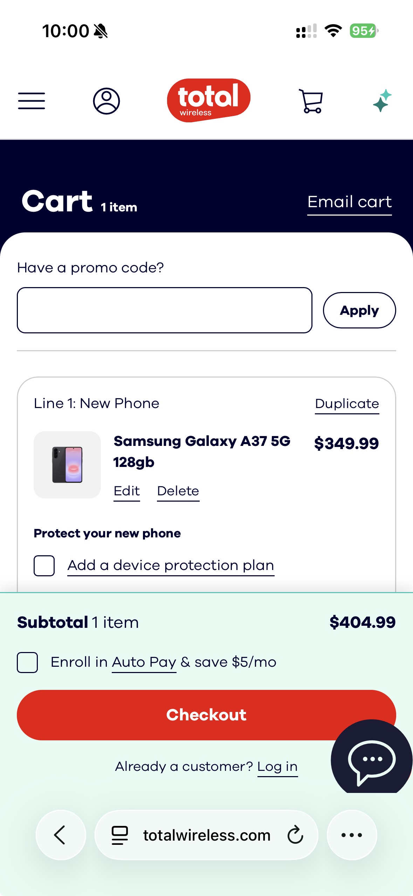
Cart — device and plan broken out per line, with a persistent Subtotal & Auto Pay summary. This is the “line-item box” pattern in the shipped product.カート — 端末とプランを回線ごとに分解し、小計と Auto Pay を常時表示。これが出荷された「ラインアイテムボックス」パターン。
04 — Checkout04 — チェックアウト
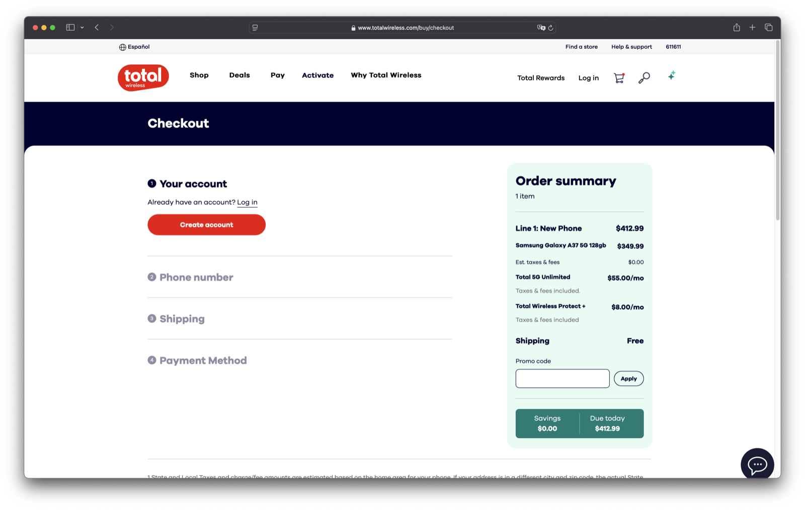
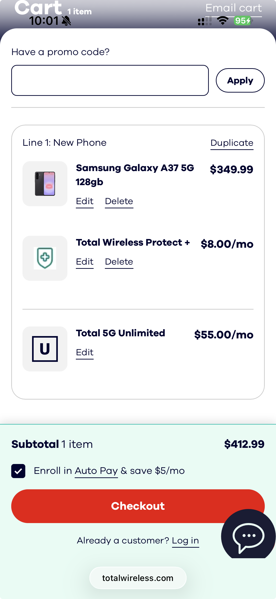
Checkout — account, number, shipping, and payment, with the running Order Summary always in view.チェックアウト — アカウント・電話番号・配送・支払いを、常時表示の注文サマリーとともに。
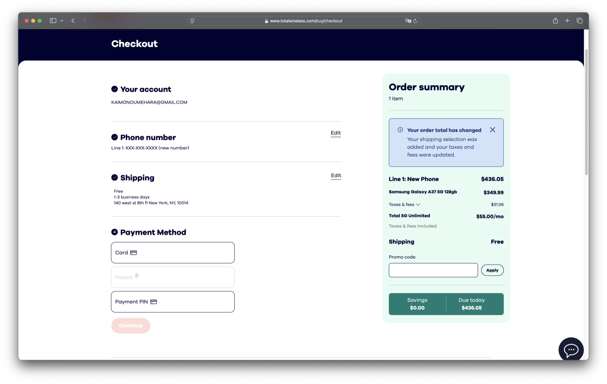
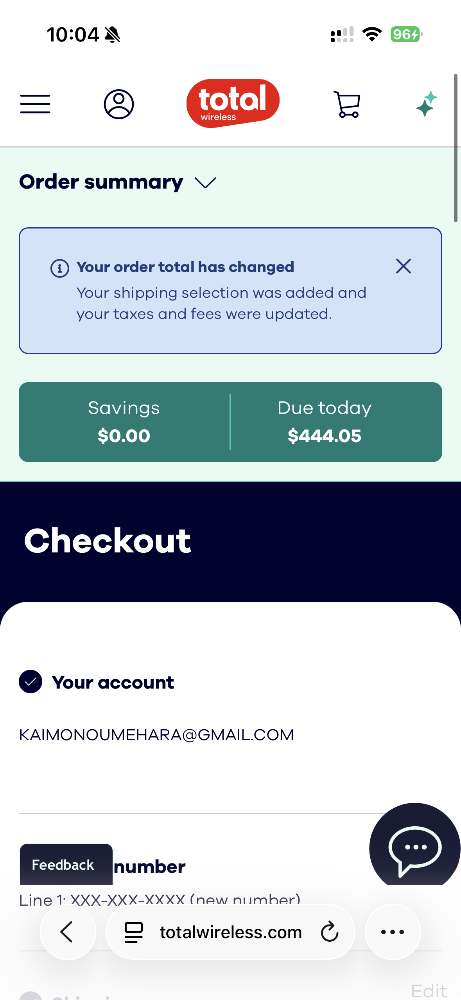
Payment — card, PayPal, or PIN, with the Savings & Due Today total confirmed before purchase.支払い — カード・PayPal・PIN に対応し、購入前に「割引額と本日のお支払い」を確定表示。
Deliverables成果物
- 6 Live HTML Prototypes6つのライブHTMLプロトタイプ
- Figma Flow DocumentationFigmaフロードキュメント
- Cart Component Patternsカートコンポーネントパターン
- Pricing Display System価格表示システム
- Responsive Specificationsレスポンシブ仕様書
Methods手法
- Live-Coded Prototypingライブコードプロトタイピング
- Competitive Analysis競合分析
- Interaction Flow Mappingインタラクションフローマッピング
- Stakeholder Reviewsステークホルダーレビュー
Tech Stack技術スタック
- HTML / CSS / JavaScript
- Tailwind CSS
- React (configurator)
- Firebase (data persistence)
- Figma